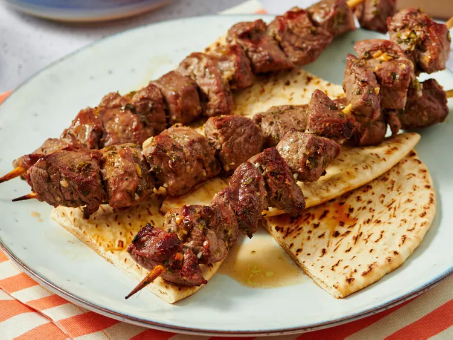

Lamb Souvlaki

Description
Juicy lamb souvlaki made with marinated pieces of lamb grilled to perfection. Serve with tzatziki, pita bread, roasted potatoes, or a Greek salad.
Ingredients
- ⅓ cup olive oil
- 1 ½ tablespoons lemon juice
- 1 ½ tablespoons red wine vinegar
- 1 ½ tablespoons chopped fresh oregano
- 2 cloves garlic, minced
- ½ teaspoon salt
- ¼ teaspoon black pepper
- 1 ½ pounds boneless leg of lamb, cubed
Steps
- Whisk olive oil, lemon juice, vinegar, oregano, garlic, salt, and pepper.
- Add lamb cubes and coat well. Cover and refrigerate for 3 hours or overnight.
- Preheat grill to medium-high and lightly oil the grate.
- Thread lamb onto skewers and grill 10–12 minutes, turning occasionally.
- Serve and enjoy!